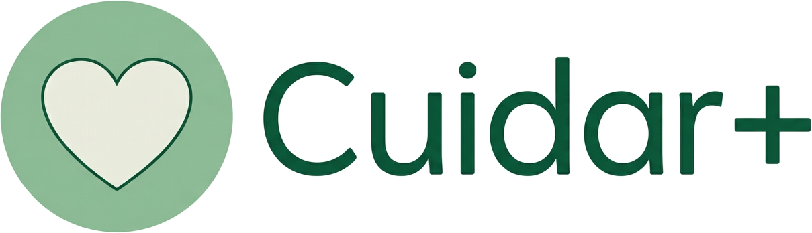
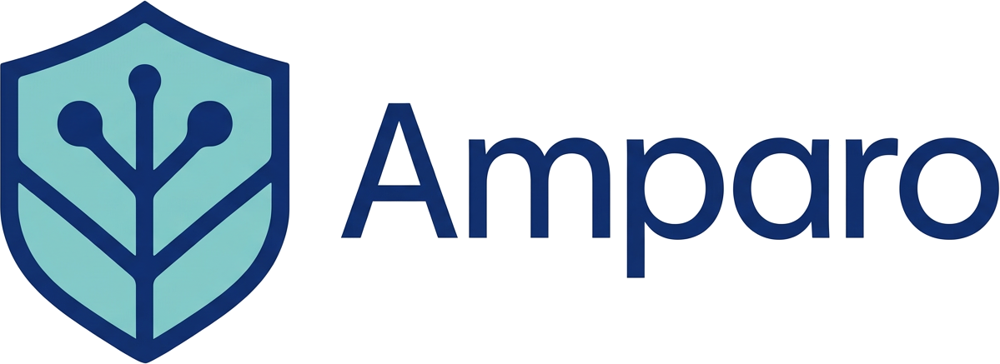

Transformação institucional e impacto social
Consultoria estratégica e inovação institucional. Impacto mensurável em Moçambique.
Planeamos, executamos e monitoramos soluções com rigor técnico para gerar resultados mensuráveis e sustentáveis.
Quem somos
Soluções que transformam desafios em resultados
A DeCarvalho é uma plataforma de consultoria que combina assistência técnica, pesquisa e gestão de projetos para transformação institucional e inovação social centrada nas pessoas.
Conhecer a DeCarvalho →Guia interactivo
O que procura?
Seleccione uma opção para ver o caminho recomendado — pode mudar a qualquer momento.
Quer formação, protocolos ou assistência técnica para a sua equipa? O Amparo fortalece instituições e provedores de serviços. Veja o impacto e peça uma proposta.
Precisa de escuta confidencial ou encaminhamento? O Cuidar+ é o canal dedicado a sobreviventes de VBG. Também pode falar connosco com discrição.
Interessado em eventos, convívio ou bem-estar da 3ª idade? Conheça o Baile da Saudade. Para parcerias: contacto.
Soluções DeCarvalho
As nossas soluções
Três marcas. Um foco: impacto real e mensurável.

Cuidar+
Atendimento direto e cuidado para sobreviventes de VBG
- Escuta e acolhimento confidencial
- Encaminhamento e acompanhamento

Amparo
Capacitação e assistência institucional para provedores de VBG
- Formação de equipas técnicas
- Protocolos e ferramentas institucionais
Baile da Saudade
Convivência intergeracional, valorização cultural e bem-estar da 3.ª idade
- Eventos e encontros temáticos
- Atividades de inclusão social
Experiência comprovada
Consultorias realizadas em VBG, género e desenvolvimento
+15 projetos para UNDP, SNV, Oxfam, Forum Mulher, Terre des Hommes, Visão Mundial e outros. Clique em cada item para ver os detalhes.
Género e Inclusão Social — Programa Brilho
Avaliação e viabilidade — Ecossistemas Florestais, Inhambane
Dimensão de Género na Revisão da Política Nacional sobre Terras
Por que escolher a DeCarvalho?
O que instituições e parceiros valorizam na DeCarvalho
Expertise multidisciplinar
Estratégia, inovação social, design institucional e gestão técnica numa única plataforma integrada.
Local com visão global
Alinha práticas internacionais (IFC, OMS, UNFPA) às realidades culturais e operacionais moçambicanas.
Foco em impacto
Cada projeto é desenhado para gerar transformação mensurável — institucional, comunitária e humana.
Abordagem ética e inclusiva
Metodologias centradas nas pessoas, respeitando diversidade e promovendo participação equitativa.
Áreas de atuação
Onde actuamos
Temas estratégicos para transformação institucional e impacto social.
VBG
Resposta à violência baseada no género e proteção de sobreviventes.
Género
Igualdade de género, políticas e análise de impacto.
Saúde
Saúde pública, SSR e integração da resposta à VBG no sector.
Capacitação
Formação de profissionais e fortalecimento institucional.
Projetos
Gestão, monitoria e avaliação de projetos de desenvolvimento.
Credenciais e Reconhecimento
Empresa moçambicana desde 2015
Mais de 9 anos de experiência em transformação institucional e inovação social
Parceiros internacionais
Trabalhamos com organizações globais de referência em desenvolvimento
Resultados mensuráveis
Impacto comprovado através de métricas e avaliações rigorosas
Expertise certificada
Equipa multidisciplinar com formação especializada e experiência prática
Perguntas frequentes
Dúvidas comuns
Encontre respostas rápidas às perguntas mais frequentes sobre os nossos serviços e como trabalhamos.
01Como solicito uma proposta ou formação?
Contacte-nos por email, WhatsApp ou na página de contacto. Descreva brevemente a sua necessidade (formação, assistência técnica, projeto) e responderemos com uma proposta personalizada. Sem compromisso.
02Em que zonas geográficas atuam?
Atuamos em Moçambique e na região da SADC. A nossa sede fica na Cidade da Matola. Realizamos formações e projetos em todo o território nacional e, quando solicitado, em países vizinhos.
03Qual a diferença entre Amparo e Cuidar+?
Amparo dedica-se à capacitação e assistência institucional — forma equipas, desenvolve protocolos e fortalece provedores de serviços de VBG. Cuidar+ oferece atendimento direto e confidencial a sobreviventes de VBG (escuta, acolhimento, encaminhamento). Juntas, cobrem toda a cadeia de resposta à VBG.
04O atendimento do Cuidar+ é confidencial?
Sim. O Cuidar+ garante total confidencialidade e dignidade. O atendimento segue abordagem trauma-informed e protocolos éticos alinhados a padrões internacionais (OMS, GBV AoR).
05Que tipo de parceiros trabalham convosco?
Trabalhamos com agências da ONU (UNDP, UNFPA, UNICEF), ONGs internacionais e nacionais, governo, redes comunitárias e empresas. Temos experiência em projetos financiados por doadores e em parcerias público-privadas.
Não encontrou a resposta? Contacte-nos.
Próximo passo
Pronto para transformar o seu projeto?
Combinamos experiência técnica e conhecimento local para impacto sustentável em Moçambique.
Consultoria especializada
Resultados mensuráveis
Equipa experiente
Prefere falar primeiro? Fale connosco.
Contacto direto
Proposta personalizada